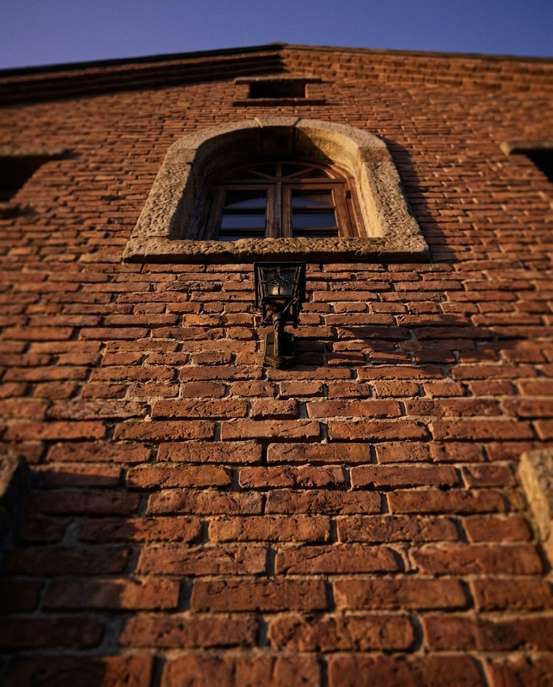
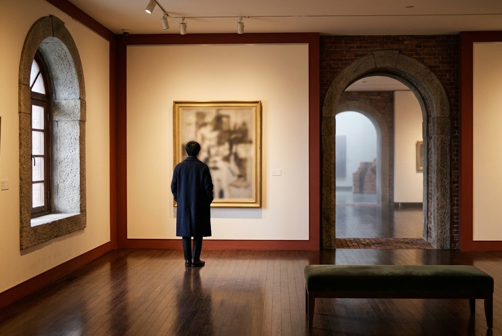

1998
創設のものがたり
1998年10月、釧路・根室圏の芸術文化の拠点として開館しました。北海道が主体となり、地域の芸術振興と、北国ならではの個性的な文化づくりを目指して設立された美術館です。
建物は、かつて釧路の港湾中心部に並んだレンガ倉庫街をイメージしたデザイン。設計は象設計集団が手がけました。
釧路・根室の芸術文化の拠点
港のレンガ倉庫街を思わせる建物の中で、釧路の空気と、ここにしかない作品に出会う。

1998
1998年10月、釧路・根室圏の芸術文化の拠点として開館しました。北海道が主体となり、地域の芸術振興と、北国ならではの個性的な文化づくりを目指して設立された美術館です。
建物は、かつて釧路の港湾中心部に並んだレンガ倉庫街をイメージしたデザイン。設計は象設計集団が手がけました。
釧路・根室にゆかりのある作品や、自然をテーマにした作品を、三つの柱で収集しています。
光と時間で表現する作品を通して、新しい芸術のかたちに触れられます。
北の大地や海の気配を感じさせる、自然をテーマにした作品を紹介します。
釧路・根室地域にゆかりのある作家と作品を、丁寧にたどります。
展示の内容は年間を通して入れ替わります。何度訪れても新しい発見があります。特別展や企画展のほか、講演会、コンサート、映画会なども開かれ、地域と連携しながら芸術文化を広く発信しています。

MOOから歩いてすぐで、晴れていると良い感じでした（中には入っていませんが）。
さかなクンの絵を見たくて行ってきました。絵の1つ1つに、その魚に関する詳しいことが書いてあり、知らなかったこともあって勉強になりました。さすがさかなクンですね。素晴らしい絵ばかりでした。